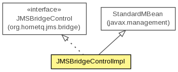

org.hornetq.jms.bridge.impl
Class JMSBridgeControlImpl
java.lang.Object
 javax.management.StandardMBean
org.hornetq.jms.bridge.impl.JMSBridgeControlImpl
javax.management.StandardMBean
org.hornetq.jms.bridge.impl.JMSBridgeControlImpl
- All Implemented Interfaces:
- DynamicMBean, MBeanRegistration, HornetQComponentControl, JMSBridgeControl
public class JMSBridgeControlImpl
- extends StandardMBean
- implements JMSBridgeControl

A JMSBridgeControlImpl
- Author:
- Jose de Castro
| Methods inherited from class javax.management.StandardMBean |
cacheMBeanInfo, getAttribute, getAttributes, getCachedMBeanInfo, getClassName, getConstructors, getDescription, getDescription, getDescription, getDescription, getDescription, getDescription, getDescription, getImpact, getImplementation, getImplementationClass, getMBeanInfo, getMBeanInterface, getParameterName, getParameterName, invoke, postDeregister, postRegister, preDeregister, preRegister, setAttribute, setAttributes, setImplementation |
| Methods inherited from class java.lang.Object |
clone, equals, finalize, getClass, hashCode, notify, notifyAll, toString, wait, wait, wait |
JMSBridgeControlImpl
public JMSBridgeControlImpl(JMSBridge bridge)
throws Exception
- Throws:
Exception
pause
public void pause()
throws Exception
- Specified by:
pause in interface JMSBridgeControl
- Throws:
Exception
resume
public void resume()
throws Exception
- Specified by:
resume in interface JMSBridgeControl
- Throws:
Exception
isStarted
public boolean isStarted()
- Specified by:
isStarted in interface HornetQComponentControl
start
public void start()
throws Exception
- Specified by:
start in interface HornetQComponentControl
- Throws:
Exception
stop
public void stop()
throws Exception
- Specified by:
stop in interface HornetQComponentControl
- Throws:
Exception
getClientID
public String getClientID()
- Specified by:
getClientID in interface JMSBridgeControl
getFailureRetryInterval
public long getFailureRetryInterval()
- Specified by:
getFailureRetryInterval in interface JMSBridgeControl
getMaxBatchSize
public int getMaxBatchSize()
- Specified by:
getMaxBatchSize in interface JMSBridgeControl
getMaxBatchTime
public long getMaxBatchTime()
- Specified by:
getMaxBatchTime in interface JMSBridgeControl
getMaxRetries
public int getMaxRetries()
- Specified by:
getMaxRetries in interface JMSBridgeControl
getQualityOfServiceMode
public String getQualityOfServiceMode()
- Specified by:
getQualityOfServiceMode in interface JMSBridgeControl
getSelector
public String getSelector()
- Specified by:
getSelector in interface JMSBridgeControl
getSourcePassword
public String getSourcePassword()
- Specified by:
getSourcePassword in interface JMSBridgeControl
getSourceUsername
public String getSourceUsername()
- Specified by:
getSourceUsername in interface JMSBridgeControl
getSubscriptionName
public String getSubscriptionName()
- Specified by:
getSubscriptionName in interface JMSBridgeControl
getTargetPassword
public String getTargetPassword()
- Specified by:
getTargetPassword in interface JMSBridgeControl
getTargetUsername
public String getTargetUsername()
- Specified by:
getTargetUsername in interface JMSBridgeControl
getTransactionManagerLocatorClass
public String getTransactionManagerLocatorClass()
- Specified by:
getTransactionManagerLocatorClass in interface JMSBridgeControl
getTransactionManagerLocatorMethod
public String getTransactionManagerLocatorMethod()
- Specified by:
getTransactionManagerLocatorMethod in interface JMSBridgeControl
isAddMessageIDInHeader
public boolean isAddMessageIDInHeader()
- Specified by:
isAddMessageIDInHeader in interface JMSBridgeControl
isFailed
public boolean isFailed()
- Specified by:
isFailed in interface JMSBridgeControl
isPaused
public boolean isPaused()
- Specified by:
isPaused in interface JMSBridgeControl
setAddMessageIDInHeader
public void setAddMessageIDInHeader(boolean value)
- Specified by:
setAddMessageIDInHeader in interface JMSBridgeControl
setClientID
public void setClientID(String clientID)
- Specified by:
setClientID in interface JMSBridgeControl
setFailureRetryInterval
public void setFailureRetryInterval(long interval)
- Specified by:
setFailureRetryInterval in interface JMSBridgeControl
setMaxBatchSize
public void setMaxBatchSize(int size)
- Specified by:
setMaxBatchSize in interface JMSBridgeControl
setMaxBatchTime
public void setMaxBatchTime(long time)
- Specified by:
setMaxBatchTime in interface JMSBridgeControl
setMaxRetries
public void setMaxRetries(int retries)
- Specified by:
setMaxRetries in interface JMSBridgeControl
setQualityOfServiceMode
public void setQualityOfServiceMode(String mode)
- Specified by:
setQualityOfServiceMode in interface JMSBridgeControl
setSelector
public void setSelector(String selector)
- Specified by:
setSelector in interface JMSBridgeControl
setSourcePassword
public void setSourcePassword(String pwd)
- Specified by:
setSourcePassword in interface JMSBridgeControl
setSourceUsername
public void setSourceUsername(String name)
- Specified by:
setSourceUsername in interface JMSBridgeControl
setSubscriptionName
public void setSubscriptionName(String subname)
- Specified by:
setSubscriptionName in interface JMSBridgeControl
setTargetPassword
public void setTargetPassword(String pwd)
- Specified by:
setTargetPassword in interface JMSBridgeControl
setTargetUsername
public void setTargetUsername(String name)
- Specified by:
setTargetUsername in interface JMSBridgeControl
setTransactionManagerLocatorClass
public void setTransactionManagerLocatorClass(String transactionManagerLocatorClass)
- Specified by:
setTransactionManagerLocatorClass in interface JMSBridgeControl
setTransactionManagerLocatorMethod
public void setTransactionManagerLocatorMethod(String transactionManagerLocatorMethod)
- Specified by:
setTransactionManagerLocatorMethod in interface JMSBridgeControl
Copyright © 2013 JBoss, a division of Red Hat. All Rights Reserved.